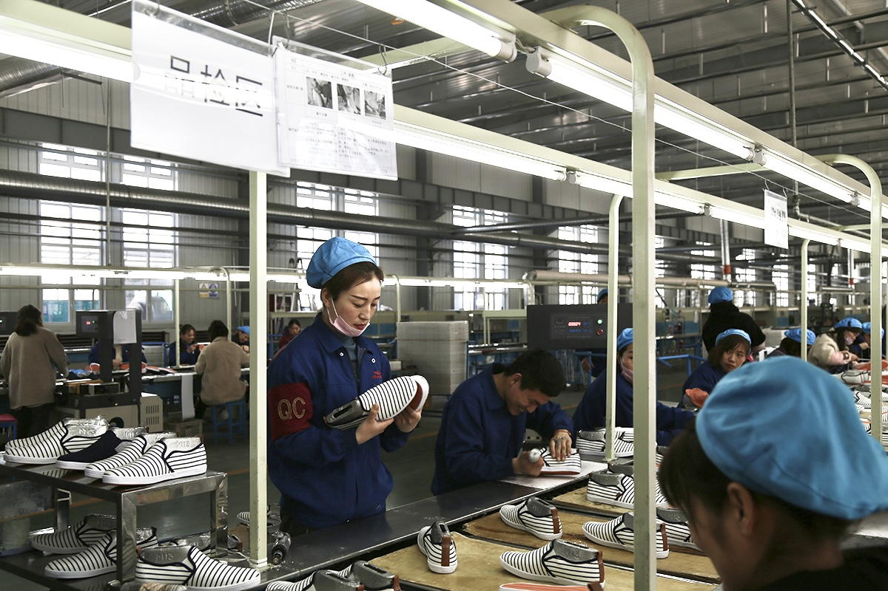
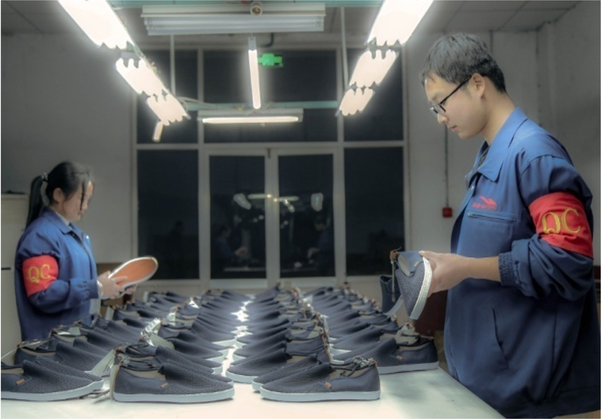

← Back
SAIGE Footwear
×
QC · 质量控制
完善的质量管理与分级检验：从来料、制程到成品出货层层把关，确保每一双鞋都稳定达标。
Quality Control Flow
Incoming Material
Inspection (100% Check)
Cutting Inspection
Upper 100% Check
Upper Warehouse
Sampling
Assembly Line Full Inspection
Assembly Line Patrol Inspection
Finished Goods Sampling
(Warehouse)
Final Inspection
(Pre-shipment / AQL)
Approved Shipment
Assembly Line Patrol Inspection
Finished Goods Sampling
(Warehouse)
Final Inspection
(Pre-shipment / AQL)
Approved Shipment

现场全检
每双鞋逐双检查，外观与结构严格比对要求，异常立即隔离复检。

抽检环节
入库及成品按 AQL/批次抽检，验证批次稳定性与一致性。